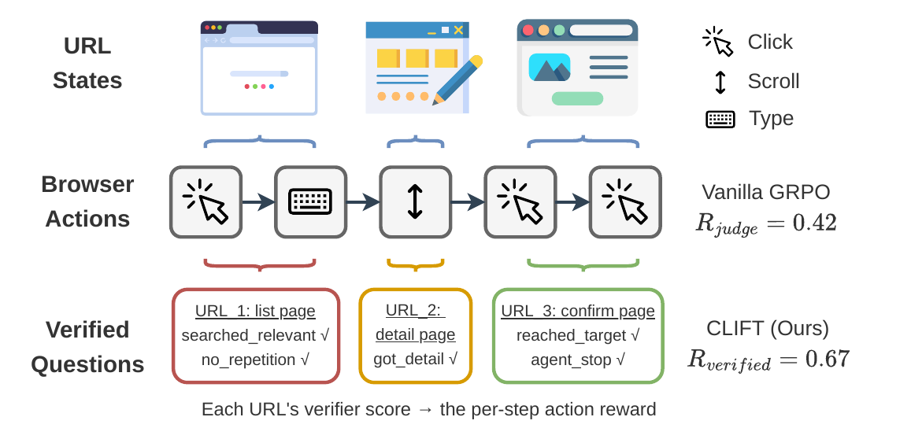
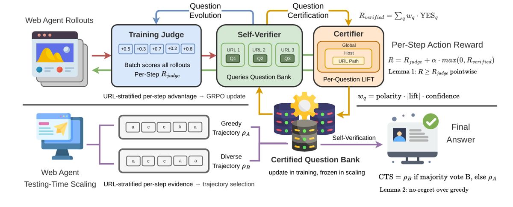
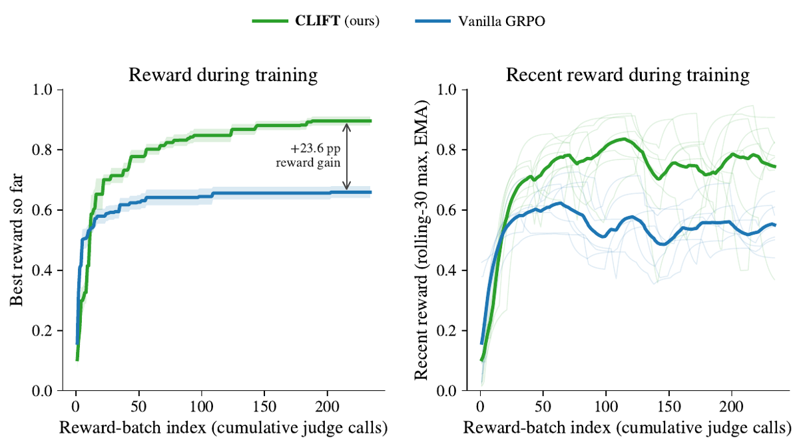
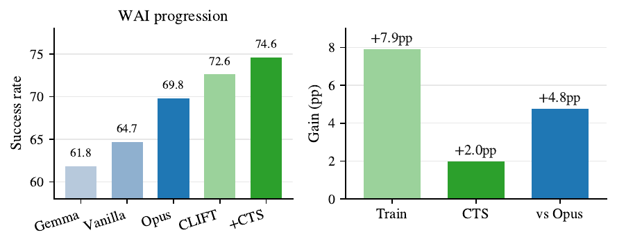
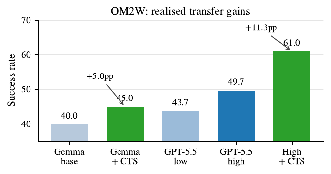

⚠️ Priorité A pour la conception, pas pour la solidité : l'objet proposé (banque de questions de vérification calibrée, réutilisée en reward et en sélection) est directement transposable au juridique, mais l'evidence est à 1/6 et la garantie conforme annoncée n'existe pas dans le papier. À lire comme un design document.
TL;DR : transformer le feedback d'un juge frontier en une banque de questions YES/NO scopées par URL, pondérées par un « certifieur conforme » (tracker Mondrian-ACI + lift), puis réutiliser cette banque (a) comme bonus de reward par pas pendant le RL et (b) comme évidence structurée pour un sélecteur de trajectoires sans juge au test (CTS) [§2].
Claim principal, formulé précisément : la même banque certifiée (i) entraîne un Gemma-4-31B de 61,8 → 72,6 SR sur les 9 apps WAI contre 64,7 pour un GRPO vanilla au même juge et même backbone, puis 74,6 avec CTS à K=3 [Tab. ablation WAI, §4.4] ; (ii) transférée à GPT-5.5 gelé sur VWA, porte la moyenne pondérée à 53,7 vs 52,9 pour WALT [Tab. VWA, §4.2] ; (iii) traduite et recalibrée sur OM2W sans aucun entraînement de politique, fait passer GPT-5.5 high de 49,7 → 61,0 à K=4 [Tab. OM2W perf., App. A.5].
⚠️ Claim implicite et central — « le certifieur est ce qui fait que ce n'est pas du prompt engineering » [§1] — n'est ablaté nulle part.
[id] [tagType] [text] + URL + action précédente.click(element_id), type_text(element_id, text, press_enter=True), scroll(direction),
goto(url), go_back(), press(key), hover(element_id), stop(answer).
Contrainte : exactement un appel d'outil par tour, « Do not narrate ».
Sur VWA et OM2W : « do not construct internal URLs with goto » / « Do not construct URLs;
click links on the page », et « Never stop on the first step », « Verify before calling stop ».R^judge_i, des scores par pas r^{i,judge}_t,
et des rationales consommées par CEGAR [§2.2]. Le juge voit des traces compactes avec des
actions lisibles ; les auteurs notent que « opaque browser-use object strings collapse
judge variance » [§2.2].
2. Self-verifier : le même backbone Gemma-4, adapter LoRA détaché, répond YES/NO aux
questions de la banque applicables à chaque état URL [§2.1, App. A.2].
3. Compositional Conformal Certifier (CCC) : pondère les questions.R^VQ_i(u) = Σ_{q ∈ Q^cert(u)} w^q_{τ*(u)} · 1[y^q_i = YES] ∈ [-1,+1] —
somme pondérée signée, pas de conjonction, pas de clause d'échec. Ensemble vide ⇒ 0.
Le tier interrogé est le plus spécifique certifié, avec repli URL-path → host → global.n ≥ n_min ∧ α^q_{t,τ} < α* ∧ |lift^q_{t,τ}| > lift_min ∧ σ_q ≠ 0.
Valeurs : α* = 0,10 · n_min = 50 · lift_min = 0,02 · θ_j = 0,5 [App. A.2, A.3].w^q_τ = σ_q · |lift| · max(0, 1 − α^q_{t,τ}/α*) ∈ [-1,+1],
où lift = différence moyenne de score juge entre les exemples YES et NO au tier τ.s = 1[pred_q(y^q_t) ≠ z_t] avec
z_t = 1[R̂^judge_t > θ_j], pred_q(YES) = 1[σ_q = +1], pred_q(NO) = 1[σ_q = −1].
Les questions neutres (σ=0) ne certifient jamais.σ_q ← 0 si n_q ≥ n_veto ∧ sgn(lift) ≠ σ_q^LLM ∧ |lift| > δ.
n_veto et δ : non précisés (jamais dans App. A.3).r̃^i_t = r^{i,judge}_t + β · max(0, R^VQ_i(u^i_t)) avec β = 0,15, γ = 0,95.
La clamp à zéro garantit r̃ ≥ r^judge : l'évidence certifiée peut renforcer le juge,
jamais le contredire à la baisse.E_t(ρ) = {(q, w, lift, y^q(ρ,u_t))}
avec y^q = probabilité YES du vérifieur sur la trajectoire partielle, passée à un prompt
comparatif qui sort A (garder greedy) / B (swap) / TIE, répété m = 3 fois à
température 0,7, règle de majorité conservatrice [éq. 8] : swap seulement si ≥ ⌈(m+1)/2⌉
votes B ; TIE et incertitude gardent l'incumbent.C'est le point décisif du papier, et il est négatif.
clift_overview.final affiche
« Lemma 1: R ≥ R_judge pointwise » et « Lemma 2: no-regret over greedy ». ⚠️ Ni l'un ni
l'autre n'est énoncé dans le texte. Lemma 1 est vrai par construction (c'est le
max(0,·) de l'éq. 6, une tautologie, pas un résultat). Lemma 2 correspond à l'éq. 9 :
E[SR(CTS)] ≥ E[SR(ρ_A)] − ε(m,δ), conditionnée à « if the bank-conditioned comparison
is above chance » et avec un ε(m,δ) qui n'est ni défini, ni borné, ni calculé. C'est
une hypothèse déguisée en garantie : « si le sélecteur est meilleur que le hasard, alors il
ne dégrade pas trop ». Rien n'est prouvé ; « above chance » n'est jamais testé.α^q_{t,τ} est un tracker Mondrian-ACI
[vovk2012, gibbs2021aci] par question × tier, alimenté par un score de non-conformité qui
est un indicateur binaire de désaccord avec le juge binarisé [éq. 2]. Le papier ne
donne jamais la récursion ACI (α_{t+1} = α_t + η(α − err_t)) ni le pas η. En
pratique, « α < α » se lit comme un taux d'erreur empirique courant sous 10 % de la
question vue comme classifieur du verdict du juge. ⇒ C'est exactement l'accord empirique
que tout le reste du corpus mesure déjà, rebaptisé.* Le mot « conformal » apporte le nom,
pas la garantie.(1/T)Σ err_t → α), pour
un tracker qui continue d'être mis à jour. Quatre obstructions, toutes présentes :
- a. Sélection. On certifie les questions dont le α courant se trouve être bas, parmi
992 candidates WAI × 3 tiers (≈ 3 000 trackers simultanés, 1 565 candidates côté VWA).
Aucune correction de multiplicité. Une garantie marginale par tracker ne survit pas au
choix a posteriori du tracker le plus favorable — malédiction du vainqueur classique.
- b. Régime fini. La garantie ACI est asymptotique en t. Les questions certifiées sont
observées à n = 66, 82, 200, 238, 520 [App. A.4] avec n_min = 50. À n=82, un taux
d'erreur empirique < 10 % a un intervalle de confiance large de plusieurs points, et le
poids w en dépend linéairement.
- c. Conditionnel ≠ marginal. Le papier vend du conditionnel à l'URL (c'est tout
l'argument « Mondrian »). Mondrian ne donne du conditionnel par groupe que si chaque
groupe a son propre flux suffisamment long. Or les 6 questions certifiées exhibées en
annexe ont toutes le pattern URL * (global) [App. A.4, Q.1 à Q.6] — y compris les
plus fortes. L'évidence montrée est donc marginale au global tier, pas conditionnelle.
- d. La cible n'est pas la bonne. z_t est le verdict du juge (Opus 4.6, seuil 0,5),
jamais le succès de la tâche. Au mieux, « certifié » signifie « s'accorde avec Opus 4.6 à
≥ 90 % sur la fenêtre observée ». Les auteurs le concèdent : « if that judge is
systematically biased, calibration can detect disagreement only through observed data » [§5].w, lequel est estimé sur les
rollouts de cette même politique ⇒ boucle fermée. ACI est robuste au drift en moyenne
de long terme, mais rien n'est dit sur ce régime, et aucune mesure de dérive (α au cours de
l'entraînement, taux de décertification) n'est rapportée.Verdict 3.2 : ⚠️ CLIFT n'offre pas la garantie distribution-free que le corpus réclame. Il offre un accord empirique en ligne avec seuil, habillé d'un vocabulaire conforme. C'est précisément le cas « pire qu'un accord empirique honnête » : l'étiquette rassure là où la quantité mesurée (α < 0,10 contre un juge LLM, sur n≈80, après sélection parmi 3 000 trackers) est plus fragile qu'un simple accord rapporté franchement.
Les 6 questions exhibées [App. A.4] sont des prédicats très génériques, tous au tier global :
- Q.1 made_meaningful_progress_toward_goal, w=+0,54, n=82 : « Did the agent reach at least one
page or state that contains information directly relevant to answering or completing the task
(not just the app homepage or navigation menus)? » — « the single strongest signal in the bank ».
- Q.2 avoided_destructive_unintended_actions, w=+0,54, n=82 (conjonction : éviter delete/cancel/
revoke non requis ET poser au moins une action constructive).
- Q.3 extracted_info_from_correct_page, w=+0,27, n=520.
- Q.4 final_page_matches_task_context, w=+0,26, n=238.
- Q.5 used_search_and_acted_on_results, w=+0,20, n=66 (VWA).
- Q.6 visited_target_detail_page, w=+0,13, n=200 (VWA).
⚠️ Q.1 est, à la reformulation près, « le modèle a-t-il progressé ? » — c'est-à-dire une paraphrase du juge lui-même. Le « certifieur » retient donc en priorité les questions les plus proches d'un proxy global de succès, ce qui explique à la fois le lift élevé et l'absence de granularité URL réelle. L'argument « URL-conditional » du titre n'est pas soutenu par l'évidence publiée.
max(0,·) protège contre l'effondrement du reward, mais amplifie le hacking : un rollout
qui apprend à déclencher des YES ne peut que gagner du reward, jamais en perdre.Prompt du juge canonique OM2W (WebJudge, [xue2025illusion]), recopié intégralement :
You are an expert in evaluating the performance of a web navigation agent. Given the user's task, the agent's action history, key points for task completion, and important web pages in the trajectory, determine whether the agent completed the task and achieved all requirements. Important criteria: filters must be applied correctly; exact ranges must match; submission/display actions must be completed; invalid or empty retrieved information may still be success if the required action was correctly performed. Respond in two lines: Thoughts: {reasoning} / Status: "success" or "failure"
⚠️ Le prompt du juge comparatif d'entraînement (Opus 4.6) n'est PAS recopié — ni rubrique,
ni échelle, ni définition du score par pas, alors que c'est l'objet qui définit z_t et donc
toute la certification. Idem pour le prompt comparatif de CTS. Deux absences majeures pour
la reproductibilité.
G^i_t = Σ_{ℓ≥t} γ^{ℓ−t} r̃^i_ℓ.
2. Normalisation de l'avantage par cellule (groupe, position de pas, état URL) [éq. 7] :
Â^i_t = (G^i_t − Ḡ_u) / (σ_{G,u} + ε). Avantages diffusés uniquement sur les spans
d'appels d'outils ; les tokens hors span reçoivent gradient zéro.
⚠️ Conséquence non discutée : le raisonnement en clair n'est pas entraîné du tout.
Et la normalisation par cellule URL avec G=8 rollouts répartis sur de nombreuses URL
distinctes donne des cellules potentiellement de taille 1-2 — σ + ε y est dégénéré.
Taille de cellule : non précisée.Le papier ne rapporte aucun cas de reward hacking. Il faut le dire clairement, et évaluer la crédibilité de cette absence.
Ce qui est rapporté, et qui n'est pas du hacking : | Cas | Comportement | Détection | Correction | Correction évaluée ? | |---|---|---|---|---| | Polarité mal taguée par le LLM | σ^LLM contredit le lift observé | éq. 5, veto de polarité | démotion à σ=0 | non — aucun chiffre sur le nombre de vetos déclenchés | | Questions non discriminantes | lift < 0,02 à tous les tiers | certifieur | poids 0, maintenue dans la banque, re-certifiable plus tard | non | | Refus de certifier sur OM2W | juge live-web plus bruité ⇒ plus de questions non certifiées | taux de certification | aucune — le refus est la réponse | les auteurs présentent ce refus comme « a diagnostic rather than a silent collapse » [§5] | | Swaps nuisibles de CTS | retry pire que le greedy | vote majoritaire m=3, défaut asymétrique | garder l'incumbent sur TIE [éq. 8] | oui, partiellement : 5 apps améliorées / 4 égalisées / 0 régressée, taux de swap moyen 17,8 % [Tab. ablation WAI] ; Case A.3 montre un refus de swap | | GRPO vanilla allonge les trajectoires | 15,4 → 18,5 pas | pas moyens sur tâches réussies | CLIFT ramène à 16,0 | oui, par l'ablation |
⚠️ Évaluation de l'absence de hacking : peu crédible telle quelle, pour trois raisons de
conception.
1. Le reward est judge + β·max(0, R^VQ) : le terme vérifieur est unidirectionnellement
positif. Toute stratégie qui déclenche des YES est un gain pur. C'est la configuration la
plus propice au hacking, pas la moins.
2. Le vérifieur est le même modèle que la politique, interrogé en langage naturel. La
politique a accès, par construction, à la représentation interne qui produit les YES.
3. Les questions les plus pondérées sont génériques et portent sur des propriétés de
trajectoire observables (« a atteint une page contenant de l'information pertinente »,
« a navigué au-delà de la page de résultats ») — c'est-à-dire des comportements qu'une
politique peut produire sans résoudre la tâche. Q.6 (« visited_target_detail_page »,
w=+0,13) récompense littéralement la profondeur de navigation.
Le garde-fou est que β=0,15 est petit et que le juge domine le reward ; c'est probablement
la vraie raison pour laquelle rien n'a explosé — pas le certifieur.
Comportements émergents inattendus : aucun rapporté. Le seul comportement positif documenté est la récupération en live web (Case A.4 : blank results → page de vérification → retour à l'accueil → formulaire natif), mais c'est une étude de cas, pas une mesure.
| Chiffre annoncé | Où il est annoncé | Source dans le papier | Verdict |
|---|---|---|---|
| « On WAI, CLIFT achieves state-of-the-art performance among open-source web agents » | abstract | Tab. leaderboard WAI §4.1 : CLIFT+CTS 74,6 vs Qwen 3.5+ 50,7, Kimi K2.5 46,4 (ouverts), Gemini 3 Flash 70,1 (fermé) | confirmé sur les entrées du tableau, mais à K=3 contre des baselines à K=1 (voir « sur-généralisé » plus bas) |
| « improves the same Gemma-4 browser-use backbone by 12.8 percentage points overall » | §4.1 | 61,8 → 74,6 [Tab. leaderboard et Tab. ablation] | confirmé arithmétiquement ; ⚠️ mais 12,8 = 7,9 (entraînement) + 2,0 (CTS) + 2,9 (GRPO vanilla), donc seulement 7,9 pp sont attribuables à CLIFT au-delà d'un GRPO ordinaire [Tab. ablation] |
| « wins 7 of 9 apps » | §4.1 | Tab. leaderboard : perd sur Linear (64,2 vs 73,0) et Xero (79,2 vs 81,0), gagne les 7 autres | confirmé |
| « The two apps led by Gemini 3 Flash are within the leaderboard's integer-rounding noise » | §4.1 | écarts réels : Linear 73,0 − 64,2 = 8,8 pp ; Xero 81,0 − 79,2 = 1,8 pp | contredit pour Linear : 8,8 pp n'est pas du bruit d'arrondi entier. Vrai (1,8 pp) seulement pour Xero |
| « the larger 110-task Gmail variant is reported separately in Figure [gain decomposition] » | §4.1 | la figure wai_gain_decomposition ne contient aucune variante Gmail 110 tâches (5 barres de progression + 3 barres de gain) |
introuvable |
| « +23.6 pp reward gain » (CLIFT vs GRPO vanilla) | Fig. courbes de reward | 0,89 vs 0,66 sur le panneau de gauche | sur-généralisé / trompeur : l'axe y est « Best reward so far » (un maximum courant, monotone), et le panneau droit un « rolling-30 max, EMA ». ⚠️ Et surtout les deux courbes mesurent des fonctions de reward différentes : celle de CLIFT inclut +β·max(0,R^VQ) ≤ +0,15 par construction. Une part non nulle de l'écart est définitionnelle. Aucune courbe de reward moyen n'est montrée. |
| « On VWA … reaches state-of-the-art performance under the canonical harness » | abstract | Tab. VWA : 53,7 vs WALT 52,9 (« narrowly above »), et « lower published baselines are omitted from the main table for space » | sur-généralisé : SOTA uniquement sur la moyenne pondérée, à +0,8 pp, à K=4 contre des baselines à rollout unique ; SGV reste devant sur Shopping (57,0 vs 51,0). Baselines inférieures retirées du tableau |
| « a bank trained with the open model transfers to GPT-5.5 at test time » | abstract | Tab. VWA : GPT-5.5+CLIFT 48,5 → +CTS (K=4) 53,7 | confirmé comme fait brut, mais ⚠️ il n'existe aucune ligne GPT-5.5 sans banque : la ligne « GPT-5.5 + CLIFT » contient déjà la banque. Le GPT-5.5 nu n'est jamais rapporté sur VWA ⇒ le gain du transfert de banque n'est pas isolable |
| « On OM2W, without training an agent on the benchmark, translating the certified question bank improves a live-web agent in zero-shot evaluation » | abstract | Tab. OM2W perf. [App. A.5] : Gemma-4 40,0 → 45,0 (K=2) ; GPT-5.5 high 49,7 → 57,3 (K=2) → 61,0 (K=4) | confirmé sur le juge canonique, ⚠️ mais « zero-shot » est inexact : la banque subit un recalibrage sur un échantillon de rollouts OM2W scorés par le juge [§3.2]. Zero-shot pour la politique, pas pour le vérifieur |
| « a +11.3pp gain » (OM2W, GPT-5.5 high) | §4.3 | 49,7 → 61,0, K=1 → K=4 | confirmé arithmétiquement, sur-généralisé comme gain de méthode : comparaison 4 rollouts contre 1, sans aucune baseline à budget apparié ; sous le juge Sonnet le même écart tombe à +9,7 (52,0 → 61,7) |
| « 100 of 132 questions certify … the transferred taxonomy does not collapse » | §4.3 | Tab. transfert OM2W : 100/132 = 75,8 % | confirmé comme chiffre, sur-généralisé comme conclusion : les 132 sont un sous-ensemble pré-filtré à la main/LLM pour sa généralité, extrait de banques candidates de 992 (WAI) et 1 565 (VWA) dont 44 et 21 seulement étaient certifiées [App. A.4]. Taux de certification à l'entraînement ≈ 4,4 % et 1,3 % — comparaison jamais faite |
| « On WAI and VWA, many URL states accumulate enough observations for signed trust weights » | §5 | 44/992 et 21/1565 certifiées [App. A.4] | contredit : 4,4 % et 1,3 % ne se décrivent pas comme « many » |
| « Lemma 1 / Lemma 2 » | figure d'overview | aucun lemme, théorème ou preuve dans le papier | introuvable |
| « E[SR(CTS)] ≥ E[SR(ρ_A)] − ε(m,δ) » | éq. 9 | ε jamais défini, jamais borné ; conditionné à « if the comparison is above chance », jamais testé | introuvable (énoncé sans contenu) |
| « CTS … never lowers the single-rollout CLIFT anchor », « 5/4/0 apps, 17.8 % swap rate » | §4.4, Tab. ablation | caption du Tab. ablation | confirmé (agrégé par app ; non rapporté par tâche) |
| « Opus 4.6 : 69.8, corrected common task IDs » | Tab. ablation | ligne de référence | confirmé, mais ⚠️ « corrected common task IDs » n'est jamais expliqué : on ne sait pas sur quel sous-ensemble ce 69,8 est calculé, ni s'il est comparable au 74,6 |
Bilan 7.0 : 6 confirmés nets, 2 contredits, 3 introuvables, 5 sur-généralisés. Les contradictions
et sur-généralisations portent toutes sur les claims qui comptent (SOTA VWA, non-effondrement de la
taxonomie, gain de reward, garantie). ⇒ case coherence fausse.
WAI, 9 apps (SR %) [Tab. leaderboard §4.1]
| App (n) | Gemini 3 Flash+BU | Qwen 3.5+ | Kimi K2.5 | Gemma-4 base | Gemma-4+CLIFT+CTS (K=3) |
|---|---|---|---|---|---|
| Elation Clinical (120) | 82,0 | 54,0 | 50,0 | 69,2 | 91,7 |
| Elation Prescription (120) | 81,0 | 42,0 | 23,0 | 70,0 | 91,7 |
| GitLab Plan & Track (140) | 64,0 | 37,0 | 39,0 | 59,3 | 69,3 |
| Gmail (60) | 75,0 | 57,0 | 70,0 | 60,8 | 78,3 |
| Handshake (200) | 50,0 | 50,0 | 50,0 | 47,0 | 56,0 |
| Linear Acct Mgmt (120) | 73,0 | 66,0 | 54,0 | 53,3 | 64,2 |
| PayPal Wallet (140) | 89,0 | 71,0 | 71,0 | 82,1 | 90,7 |
| Super-human (120) | 50,0 | 26,0 | 15,0 | 45,8 | 52,5 |
| Xero Invoicing (120) | 81,0 | 56,0 | 52,0 | 75,0 | 79,2 |
| Overall | 70,1 | 50,7 | 46,4 | 61,8 | 74,6 |
Ablation WAI [Tab. ablation §4.4] — tous les rows partagent juge Opus 4.6 et backbone browser-use : | Variante | Changement isolé | SR | Δ | Pas moyens | |---|---|---|---|---| | Gemma-4 base | pas de RL, greedy | 61,8 | — | 15,4 | | Vanilla GRPO | reward scalaire du juge comparatif | 64,7 | +2,9 | 18,5 | | CLIFT | reward par pas certifié + avantages URL | 72,6 | +10,8 | 16,0 | | CLIFT+CTS | + sélection conservatrice | 74,6 | +12,8 | 15,5 | | Opus 4.6 | référence closed-model | 69,8 | +8,0 | — |
VWA [Tab. VWA §4.2] : Gemma-4 base 30,9 → CLIFT 34,4 → +CTS (K=2) 35,6 ; GPT-5.5+CLIFT 48,5 → +CTS (K=4) 53,7 ; WALT 52,9 ; SGV 50,2 ; humain 88,7.
OM2W [App. A.5] : Gemma-4 base 40,0 (Sonnet 46,8) → +ours K=2 45,0 (Sonnet « partial positive ») ; GPT-5.5 low 43,7 ; GPT-5.5 high 49,7 (Sonnet 52,0) → +ours K=2 57,3 (55,7) → +ours K=4 61,0 (61,7). ⚠️ La cellule « partial positive » est une entrée non numérique dans un tableau de résultats. Dans le seul cas où le cross-check pourrait contredire le résultat open-backbone, le chiffre n'est pas donné.
| Case | Valeur | Justification en une ligne |
|---|---|---|
baselines |
vrai | GRPO vanilla partage base model, juge comparatif, pile browser-use et budget de juge (axe x = cumulative judge calls) ⇒ le claim d'entraînement a une baseline réellement appariée. |
ablation |
faux | L'ablation isole le bundle banque+URL, jamais la certification conforme revendiquée par le titre, ni la banque dans CTS. |
variance |
faux | Zéro seed, zéro IC, zéro écart-type ; 16 shards moyennés et jamais rapportés séparément. |
coherence |
faux | 2 chiffres contredits (bruit d'arrondi Linear, « many URL states »), 3 introuvables (Gmail 110, Lemma 1/2, ε(m,δ)), 5 sur-généralisés. |
eval |
faux | Aucun juge validé contre des humains, FP/FN du vérifieur jamais mesurés, une cellule de cross-check non numérique. |
repro |
faux | Ni code, ni banque, ni tâches, ni poids, ni prompt du juge d'entraînement ; aucune annonce de release. |
evidence = 1/6, evidence_manquant: [ablation, variance, coherence, eval, repro].
À répliquer, et à lire pour le design plutôt que pour les chiffres.
Ce qui tient : le bundle (banque de questions + reward par pas + avantage stratifié par URL) bat un GRPO vanilla apparié de ~7,9 pp sur WAI à budget de juge égal, avec des trajectoires plus courtes, et un sélecteur conservateur qui ne régresse sur aucune app. C'est un résultat d'ingénierie crédible.
Ce qui ne tient pas : (i) le mot « conformal » ne recouvre aucune garantie — ni théorème, ni couverture, ni échangeabilité, ni même l'écriture de la récursion ACI ; les deux « lemmes » annoncés en figure n'existent pas ; (ii) le gain de test-time scaling, qui porte les deux claims SOTA, n'a aucun contrôle à budget de rollouts apparié ni de placebo sans banque ; (iii) l'argument URL-conditionnel est contredit par l'annexe, où les 6 questions certifiées exhibées sont toutes au tier global ; (iv) le non-effondrement de la taxonomie (75,8 %) compare un sous-ensemble pré-filtré pour sa généralité à rien, alors que les taux de certification natifs sont de 4,4 % et 1,3 %.

Ce qu'il faut voir : la seule idée de reward du papier, en une image — remplacer un scalaire de trajectoire par un score hérité de l'état URL vers les actions prises à cet état. C'est une stratification d'état, pas un process reward model : aucun modèle n'est appris, juste des questions pondérées.
Ce qu'il faut voir : deux choses. (a) La boucle complète : le juge comparatif score le groupe, le self-verifier (backbone, LoRA détaché) interroge la banque par URL, le certifieur calculew_q = polarity · |lift| · confidence, et la banque est mise à jour en entraînement, gelée au
scaling. (b) ⚠️ En bas à droite et à droite : « Lemma 1: R ≥ R_judge pointwise » et
« Lemma 2: no-regret over greedy » — aucun de ces deux lemmes n'existe dans le papier.
Le premier est une tautologie du max(0,·), le second est l'éq. 9 avec un ε(m,δ) jamais défini.
La figure utilise aussi α pour le coefficient de blend là où le texte écrit β, et α* pour le
niveau conforme : collision de notation sur l'objet central.

Ce qu'il faut voir : le piège de lecture du papier. L'axe x est en appels de juge cumulés (bon réflexe : budget de juge apparié). Mais l'axe y de gauche est « Best reward so far », un maximum courant donc monotone par construction, et celui de droite un « rolling-30 max, EMA » — il n'y a aucune courbe de reward moyen dans le papier. L'annotation « +23,6 pp reward gain » est un écart entre deux maxima de fonctions de reward différentes (celle de CLIFT contient+β·max(0,R^VQ), ≤ +0,15 définitionnel). Et les courbes fines des 16 shards (panneau
droit) se chevauchent largement entre vert et bleu : la dispersion inter-shard est du même
ordre que l'écart revendiqué, et aucun IC n'est rapporté.

Ce qu'il faut voir : la bonne décomposition, et la seule comparaison appariée du papier : +7,9 pp d'entraînement (CLIFT 72,6 vs GRPO vanilla 64,7) contre +2,0 pp de CTS. Autrement dit, le gain réel vient du reward, pas du test-time scaling — sur WAI. ⚠️ L'axe y est tronqué (départ ~58) ce qui gonfle visuellement les écarts, et le texte renvoie à cette figure pour « la variante Gmail à 110 tâches » qui n'y figure pas.
Ce qu'il faut voir : le résultat le plus fort du papier (49,7 → 61,0 sans aucun entraînement de politique) et sa faille la plus nette dans la même image : les barres vertes « + CTS » sont à K=2 (Gemma) et K=4 (GPT-5.5 high) contre des barres bleues à K=1, et la figure n'affiche aucun K. Un lecteur pressé lit +11,3 pp de méthode ; le tableau de l'annexe A.5 dit 4 rollouts contre 1, sans baseline de sélection à budget égal.| Ingrédient | Choix du papier | Équivalent juridique | Transfert | Ce qui manque |
|---|---|---|---|---|
| Source des tâches | Synthèse depuis les schémas de l'app (186+206 seeds), expansion ×20 par 2 LLM frontier, filtre 4 étages (parse, dédup cos 0,92, hardcoded, navigation triviale) [App. A.2] | Synthèse depuis la structure des sources (plan de code, table des matières d'un contrat type, arborescence d'une base de jurisprudence) plutôt que depuis des questions d'examen | adaptable | Le filtre « hardcoded » (réponse verbatim dans le schéma) est trivial à porter ; le filtre « navigation triviale » n'a pas d'équivalent. Aucune distribution de difficulté, aucun filtrage par pass@k — à ajouter |
| Vérifieur | Banque de questions YES/NO scopées par URL, pondérées par lift vs juge binarisé, seuil α*=0,10 / n_min=50 [§2.1] | Banque de questions de rubrique scopées par type d'acte × juridiction × stade procédural (« la citation existe-t-elle ? », « la juridiction est-elle la bonne ? », « l'exception X a-t-elle été envisagée ? »), calibrée contre un juge expert | adaptable — c'est le cœur de l'intérêt | ⚠️ Tout l'appareil « conforme » : il n'y a pas de garantie à importer, seulement un accord empirique en ligne avec seuil. À importer en le nommant correctement. Et FP/FN jamais mesurés — en droit c'est non négociable |
| Scope de conditionnement | URL-path → host → global, hiérarchie Mondrian à 3 tiers avec repli [éq. 1] |
Hiérarchie article/clause précis → domaine (fiscal, social…) → global avec repli |
direct (la structure de repli est le bon pattern : spécifique si assez de données, global sinon) | Les 6 questions exhibées sont toutes globales ⇒ aucune preuve que le tier spécifique fonctionne. En droit c'est le tier spécifique qui compte |
| Harness / outils | 8 outils navigateur, un appel par tour, snapshot d'accessibilité [App. A.1] | Recherche documentaire, citation, vérification de citation, lecture de source, rédaction, stop(answer) |
adaptable | Rien sur le contexte long, les timeouts, les erreurs d'outils — or une trajectoire juridique est plus longue qu'une trajectoire web |
| Algo | GRPO, G=8, reward par pas, avantage normalisé par cellule (groupe, position, état) [éq. 6-7], gradient uniquement sur les spans d'outils | GRPO avec avantage normalisé par (groupe, position, source/juridiction consultée) | adaptable | ⚠️ Gradient zéro hors spans d'outils : inacceptable en droit, où le raisonnement rédigé est le livrable. À inverser. Et cellules dégénérées si trop de strates |
Blend asymétrique r = r_judge + β·max(0, R^VQ), β=0,15 |
Le vérifieur bon marché ne peut qu'ajouter au juge cher [éq. 6] | Idem : rubrique auto-vérifiée ne peut qu'ajouter au score de l'expert | direct | ⚠️ Protège contre l'effondrement du reward mais favorise le hacking (gain unidirectionnel). En droit, où l'omission coûte plus que l'erreur, il faut au contraire des termes négatifs : une question « a-t-il omis l'exception applicable ? » doit pouvoir soustraire |
| Curriculum | Aucun sur les tâches ; CEGAR fait croître la banque de 3-5 questions / 60 pas [§2.1] | Curriculum de rubrique : faire proposer par le juge expert les critères que la banque actuelle ne discrimine pas | adaptable | n_veto et δ non précisés ; nombre de vetos déclenchés jamais rapporté |
| Anti-hacking | Veto de polarité [éq. 5] + défaut asymétrique de CTS (TIE ⇒ greedy) [éq. 8] | Veto de polarité sur les critères de rubrique ; défaut « garder la réponse initiale » en cas d'incertitude | direct pour le défaut asymétrique | Aucun test d'attaque, aucune politique adverse. En droit, le vérifieur sera attaqué (citations plausibles mais fausses, hedging rentable) |
| Juge-free au test | Banque gelée + 3 votes du backbone local [§2.3] | Rubrique gelée + votes du modèle au déploiement, sans expert | adaptable | ⚠️ Faux « judge-free » : chaque nouveau domaine exige un recalibrage sur rollouts jugés [§3.2]. En droit = un échantillon annoté par un expert par juridiction |
La banque de questions comme artefact persistant, séparée de la politique — et plus précisément le fait qu'une seule et même banque sert de reward pendant le RL puis de signal de sélection au test, sans réappeler le juge cher. C'est la réponse la plus économique que j'aie vue au problème central du juridique : l'expert est cher, non réappelable à l'inférence, et son jugement est habituellement consommé une fois (« a trajectory score is consumed once; a certified bank can be inspected, recalibrated, and reused » [§7]). Une banque de rubriques est en plus auditable et traçable jusqu'à la rationale de l'expert qui l'a introduite — exigence dure en droit, que ni un reward model ni un juge LLM opaque ne satisfont.
Second ingrédient, plus immédiat : le blend asymétrique r = r_expert + β·max(0, R^rubrique).
Il permet d'ajouter du signal dense bon marché à un signal d'expert rare sans risquer de le
contredire — et donc de densifier un reward juridique sans dégrader le critère de référence.
À condition d'ajouter une voie négative pour les omissions (voir ci-dessous).
Montage. Sur un sous-ensemble de recherche juridique (type Vals Legal Research Bench) : (1) faire scorer N≈300 trajectoires par un juge fort (ou un expert) avec rationales ; (2) en extraire ~100 questions de rubrique YES/NO taguées en polarité, scopées à 3 tiers (matière → juridiction → global) ; (3) calibrer le lift de chaque question sur la séparation pass/fail des probabilités YES du modèle de base, avec n_min=50, seuil de lift, veto de polarité ; (4) geler la banque et faire uniquement du test-time scaling : K=4 rollouts, sélection par vote majoritaire m=3 sur évidence structurée.
Les deux bras de contrôle que CLIFT n'a pas, et qui sont tout l'intérêt de l'expérience : - bras placebo : même prompt comparatif, même K, même m, mais banque de questions génériques non calibrées (même nombre de questions, même longueur de prose) ; - bras budget : sélection aléatoire parmi les K rollouts, et self-consistency.
Résultat attendu : le bras banque-calibrée bat le placebo de ≥ 3 pp et le bras aléatoire de ≥ 5 pp, à K et m identiques.
Résultat qui falsifierait : le placebo égale la banque calibrée à ±1 pp. Dans ce cas tout le gain vient de « tirer K trajectoires et faire comparer deux par un LLM », la calibration ne sert à rien, et il ne faut pas investir dans le certifieur — c'est exactement le scénario que l'absence de ce contrôle dans CLIFT laisse entièrement ouvert. Signal falsifiant secondaire : si le taux de certification au tier juridiction reste sous ~5 % (comme les 44/992 de WAI), le conditionnement hiérarchique est mort-né et il faut se rabattre sur une rubrique globale assumée.
Coût : faible — aucun entraînement, seulement de l'inférence et ~300 scores de juge. C'est le point fort du montage : il teste la thèse centrale de CLIFT avant d'engager du RL.
Deux : 1. Sur quoi veut-on une garantie, et accepte-t-on de n'en avoir aucune ? CLIFT montre qu'on peut habiller un seuil d'accord empirique d'un vocabulaire conforme sans qu'un seul théorème soit énoncé. Si « Gemini Law » doit annoncer une garantie de couverture sur l'acceptation d'un vérifieur, il faut décider en amont : (a) couverture marginale sur un flux i.i.d. de dossiers — hypothèse fausse dès que la politique apprend ; (b) couverture conditionnelle par juridiction — exige un n par juridiction qu'on n'aura pas ; (c) aucune garantie, et un accord expert↔vérifieur rapporté honnêtement avec FP et FN séparés. Mon avis : (c), et le dire. Une garantie mal posée sur un produit juridique est un risque de conformité, pas un argument. 2. Qui possède la banque de rubriques, et comment on la recalibre par juridiction ? Si l'artefact durable est la banque et non les poids, alors sa gouvernance (provenance jusqu'à l'expert, versioning, recertification quand le droit change) devient un problème produit, pas un détail d'entraînement. Et le coût récurrent est un échantillon annoté par juridiction, pas un one-shot.